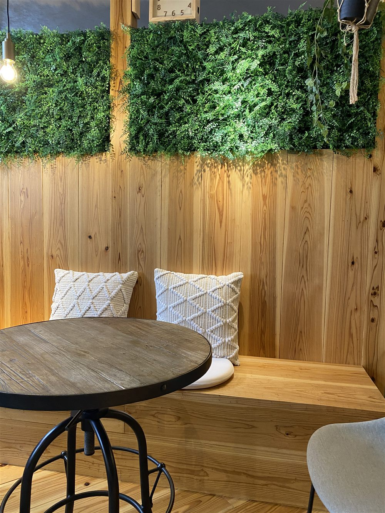
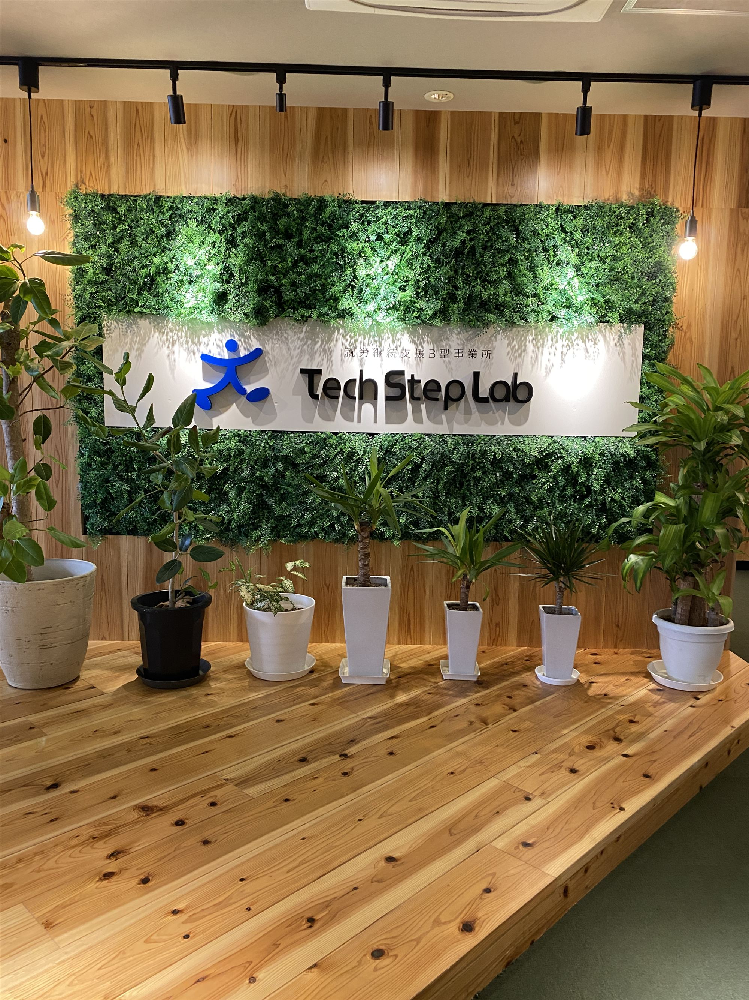
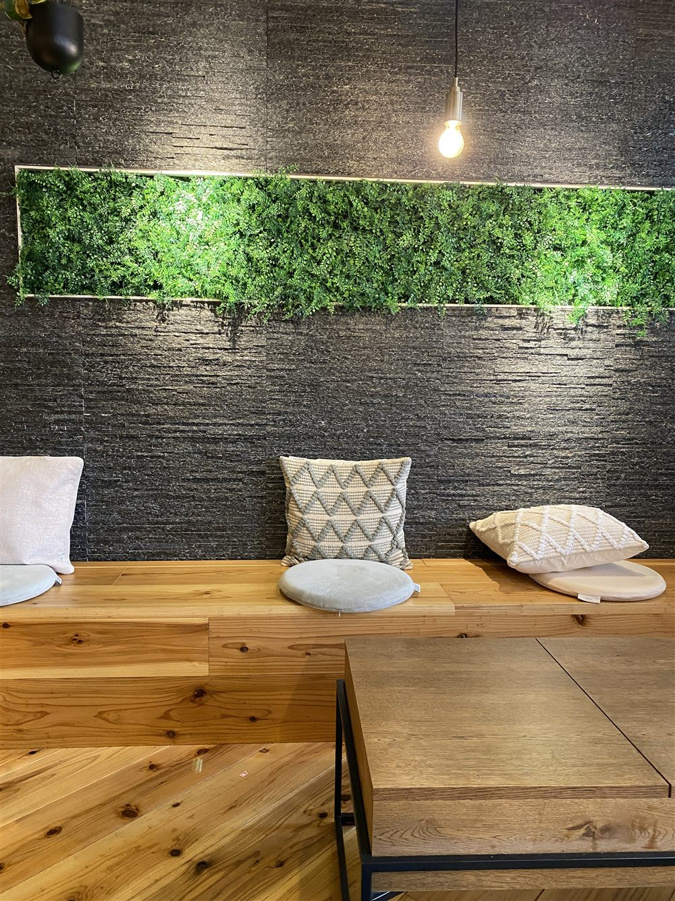
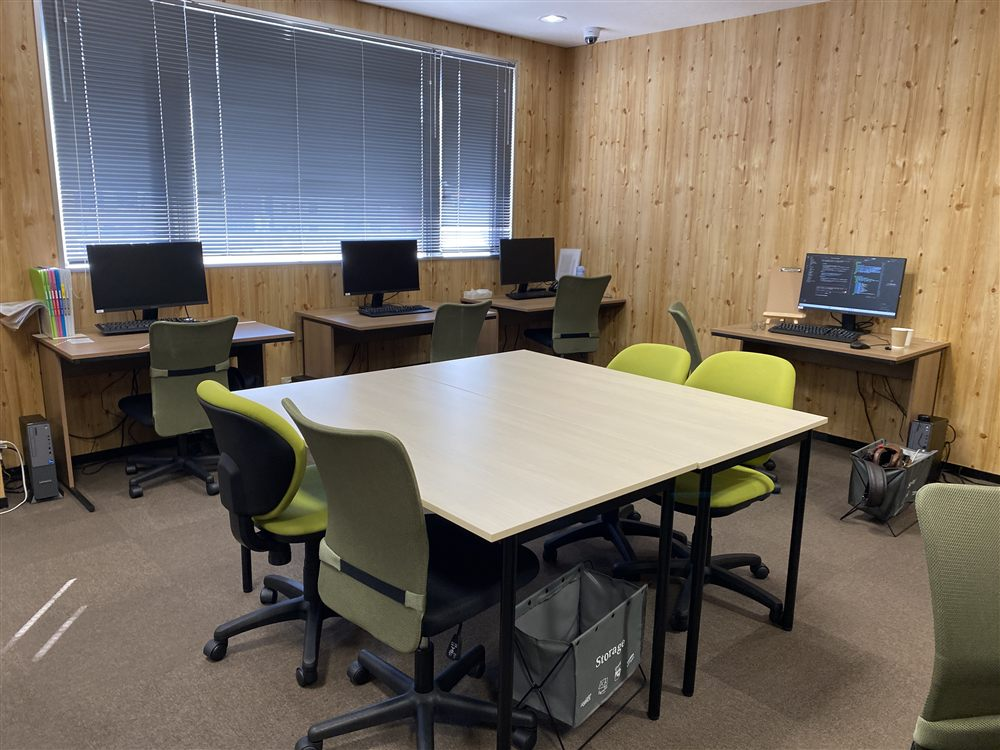
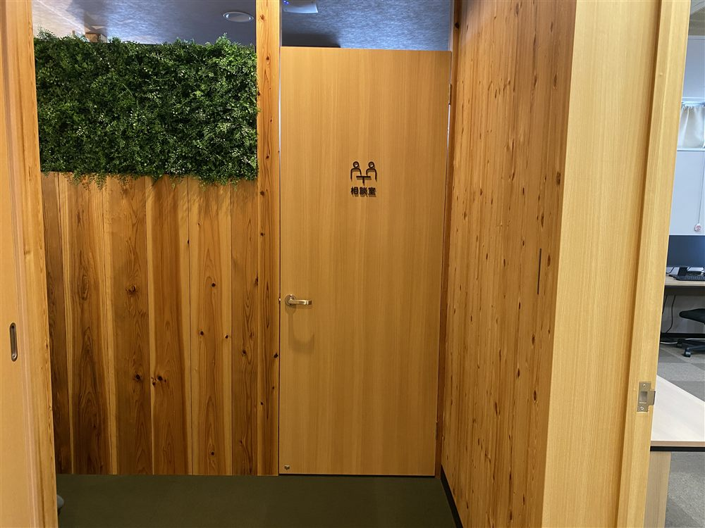
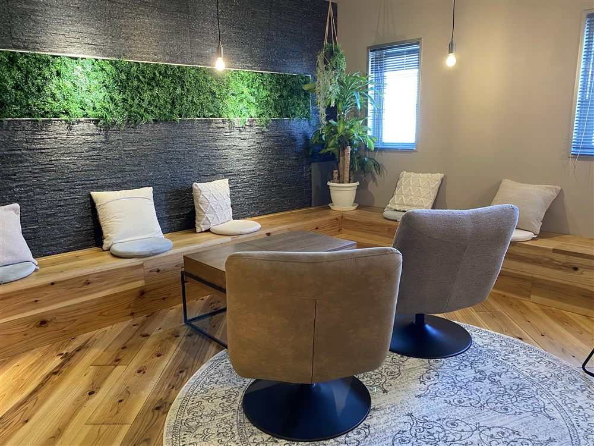
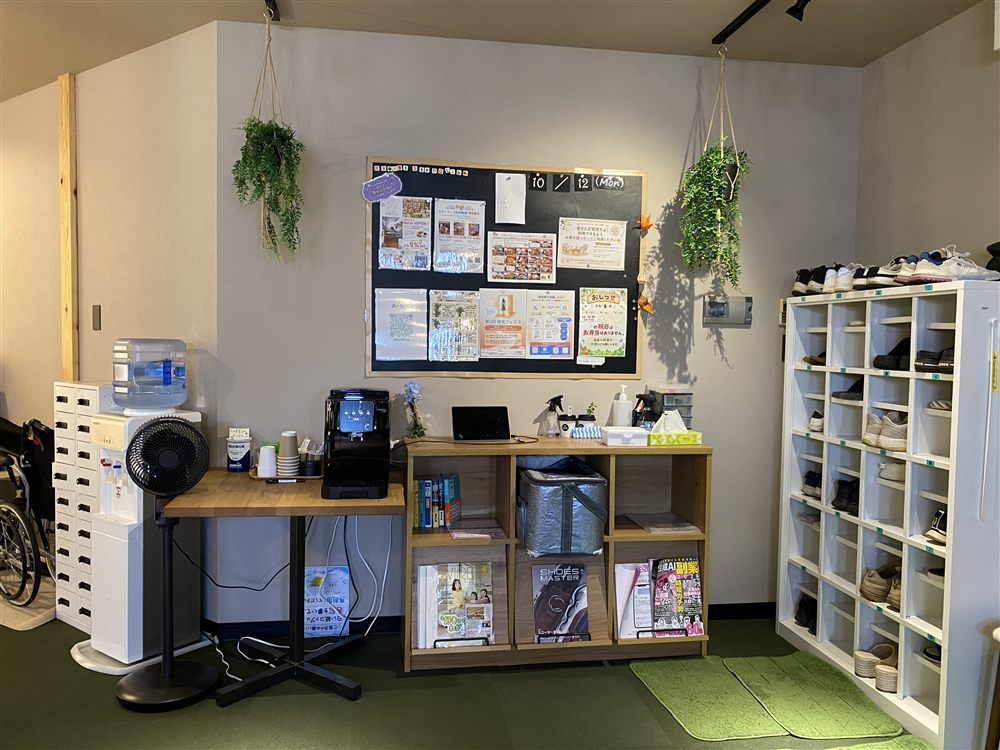
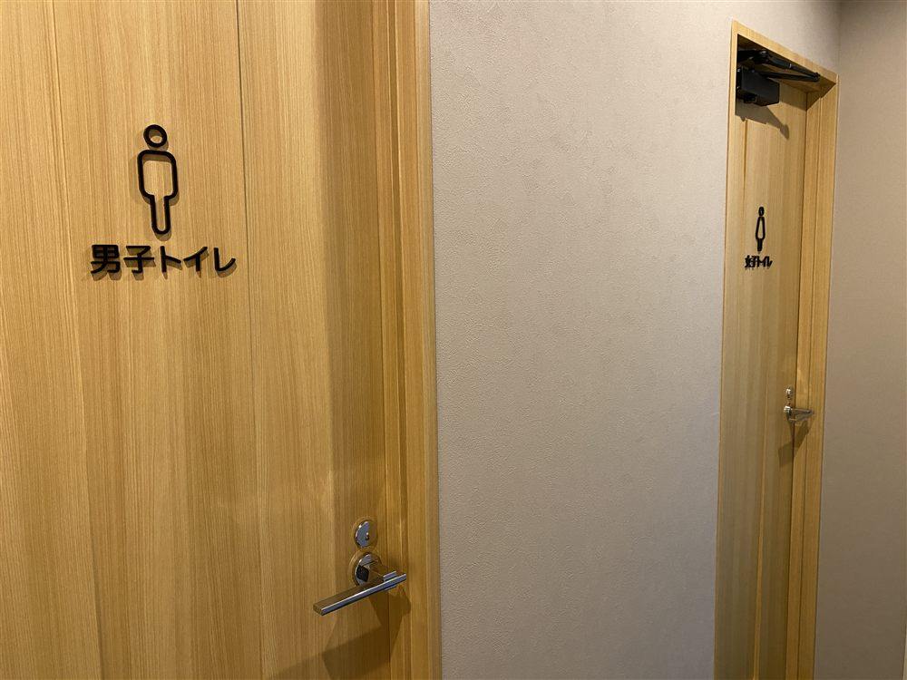
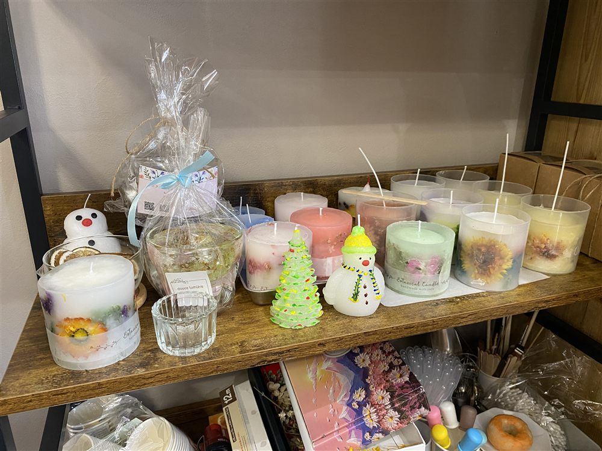

2026年4月オープン ｜ 大分市中央町の就労継続支援B型事業所
自分のペースで「働く」を練習できる場所です。
あなたの一歩が、未来をつくる。

テックステップラボは、大分市中央町にある就労継続支援B型事業所です。
「技術」と「成長のステップ」をキーワードに、IT・デジタルスキル・クリエイティブ分野を中心とした支援を行っていきます。 利用者一人ひとりの「できること」「やってみたいこと」に寄り添いながら、パソコン作業、デザイン、データ入力などの業務を通じて、働く力と自信を育みます。
また、地域とのつながりを大切にし、福祉とテクノロジーの架け橋となることを目指しています。
テックステップラボは、そんな一歩を応援する場所です。
合言葉
「一歩ずつ、あなたらしさ。」
ITやデジタルスキルを活かした就労継続支援B型事業所として、
利用者の可能性を地域とともに育てます。
「PC作業だけかと思ったら、キャンドルや軽作業もあって驚いた！」
― 見学に来られた方の声
障がいや体調などの理由で、一般企業で働くことに不安がある方が、 雇用契約を結ばずに、自分の体調やペースに合わせて働くことができる福祉サービスです。 作業に対しては「工賃」が支払われます。
木のぬくもりとグリーンに包まれた、カフェのように落ち着ける空間です。


PC業務に関する生産活動
生産活動の内容
デザイン制作、HP制作・管理、チラシ、名刺印刷、動画撮影・編集、SNS運用など、パソコンを使った生産活動を行います。
使うツール
身につくチカラ
ECサイト運営に関する生産活動
生産活動の内容
バッグ、アパレル、アーティフィシャルフラワー、アロマキャンドルなどをECサイトで販売するための、商品説明文の作成、商品撮影、購入者とのやり取り、梱包、発送を行います。
身につくチカラ
製作業務に関する生産活動
生産活動の内容
アロマキャンドルの製作を行います。
身につくチカラ
このほか、軽作業もあります。体調や得意なことに合わせて、自分に合った作業を選べます。
こまめに休憩をとりながら、無理のないペースで過ごします。
時間あたりの工賃は、以下の6つの役割分類をもとに決定します。
できることが増えるほど、一段ずつステップアップしていきます。
毎月の通所日数に応じて、工賃とは別に「精勤手当」を支給しています。
定期的な通所を後押しし、生活リズムづくりや作業能力の向上を応援するための制度です。
グループ内から安定した仕事があるため、毎月しっかり工賃を受け取れます。続けるほど少しずつ工賃が増えていく仕組みもあります。
働くことに不安がある方も、無理なく取り組めます。はじめての作業も、スタッフがそばで丁寧にサポートします。
PC作業も手仕事もあるから、得意なことや「好き」を活かした仕事が見つかります。
お電話・メール・Instagramのメッセージで、お気軽にご連絡ください。
事業所の雰囲気や作業の様子をご覧いただけます。
実際に作業を体験して、自分に合うか確かめられます。
お住まいの市区町村の窓口で手続きを行います。
利用計画をいっしょに立てて、通所スタートです。
🤝 企業・お店・地域のみなさまへ
テックステップラボでは、お仕事のご依頼をお受けしています。
下記のようなご要望がありましたら、お気軽にご相談ください。
💬 「こんなことも頼める？」というご相談も大歓迎です
| 事業所名 | Techsteplab（テックステップラボ） |
|---|---|
| サービス種別 | 就労継続支援B型 |
| 開所 | 2026年4月 |
| 所在地 | 〒870-0035 大分県大分市中央町2丁目8番10号 ヴィアレ・テッツォ 4F-A （竹町商店街の「ヴィアレ・テッツォ」ビル4階） |
| 電話番号 | 097-594-8777 |
| メール | techstep01@central-oita.com |
| 担当 | 亀野（管理者） 井上（サービス管理責任者） |
| 営業時間 | 9:00〜17:00 |
| アクセス | JR大分駅 北口から中央通り方面へ徒歩約7〜10分 バス「中央通り」または「トキハ前」バス停から徒歩約3分 |
| 運営法人 | 株式会社セントラルカンパニー |
事業所の様子や作品づくりを発信しています。
下のボタンから、それぞれのページをご覧ください。
「気になるけど、電話する勇気が出ない…」
そんな方のために、よくある不安とその答えをまとめました。
🤔何を話せばいいか、わからない
「ホームページを見ました。見学したいです」のひと言で大丈夫です。
😰うまく話せるか、不安
お名前やご都合は、スタッフから順番におたずねします。ゆっくりで大丈夫です。
🙅利用をすすめられそうで、こわい
見学だけでも大丈夫です。その日に決める必要はありません。
📵電話そのものが、苦手
メールでもOKです。下の例文をコピーして、名前と希望の日を書くだけです。
「ホームページを見ました。
見学をしてみたいのですが…」
「お電話ありがとうございます！
では、ご都合のよい日をおうかがいしますね」
あとはスタッフがご案内します。メモを見ながら話しても大丈夫です。
📞 097-594-8777 に電話する件名：見学の希望（ホームページを見ました） テックステップラボ ご担当者様 はじめまして。〇〇（お名前）と申します。 ホームページを見て、見学をしてみたいと思い ご連絡しました。 希望の日：〇月〇日ごろ（午前／午後） 連絡先：〇〇〇-〇〇〇〇-〇〇〇〇 その他、聞きたいこと： （例：見学にかかる時間、送迎のこと など。 なければ空欄のままで大丈夫です） よろしくお願いいたします。






A見学だけでも大丈夫です。その日に決める必要はありません。おうちに帰ってから、ゆっくり考えてください。
A「ホームページを見ました。見学したいです」のひと言で大丈夫です。お名前やご都合は、スタッフから順番におたずねします。
Aメールや、Instagramのメッセージでも受け付けています。上の例文を使うと、かんたんに送れます。
Aご家族や支援者の方といっしょに来ていただいても大丈夫です。
A特別な持ち物はいりません。ふだんの服装でお越しください。
A作業スペースや休憩スペースをご案内し、作業の様子を見ていただきます。気になることは、相談室でゆっくりご質問ください。
A大丈夫です。はじめての作業も、スタッフがそばで丁寧にサポートします。パソコン作業のほかに、キャンドル製作や軽作業もあります。
A作業は50分ごとに10分の休憩があり、お昼休みもあります。無理のないペースで過ごせます（1日のスケジュール例）。
A見学・体験の段階では、まだお持ちでなくても大丈夫です。手続きの方法もご案内します（ご利用までの流れ）。
A竹町商店街の「ヴィアレ・テッツォ」ビル4階です。JR大分駅北口から徒歩約7〜10分、「中央通り」「トキハ前」バス停から徒歩約3分です（地図）。
Aテックステップラボで作ったキャンドルは、大分市末広町の「ちいさな雑貨店 macco」でも販売しています。
それでも迷ったら、「ちょっと聞いてみるだけ」で大丈夫です。
あなたからのご連絡を、スタッフ一同お待ちしています 😊
🌿 お問合せ先 🌿
就労継続支援B型事業所
TechStepLab
📍 〒870-0035 大分市中央町2丁目8-10 ヴィアレ・テッツォ 4F-A